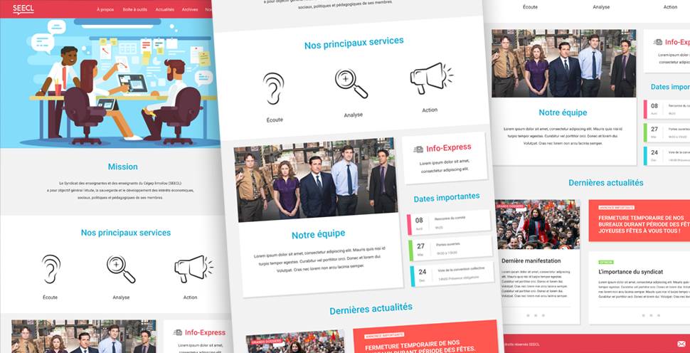

<div id="single-portfolio">
	<div id="portfolio-details" class="container">
		<a class="close-folio-item" href="#"><i class="fa fa-times"></i></a>
		
		<div class="row">
			<div class="col-sm-9">
				<div class="project-info">
					<h3>Syndicat SEECL</h3>
					<p>Dynamiser le site pour le Syndicat des Enseignantes et Enseignants du Cégep Limoilou afin de réorganiser l’information, et ainsi mieux présenter la mission du syndicat, les services et la communication des activités pour rejoindre une plus grande proportion de membres.</p>
				</div>
			</div>
			<div class="col-sm-3">
				<div class="project-details">
					<h3>Détails</h3>
					<p><span>Client: </span>Projet AEC Cégep Limoilou</p>
					<p><span>Date:</span> 13 Janvier 2017</p>
					<p><span>Rôles:</span> Chargé de projet, architecture d'information.</p>
				</div>  
			</div>
		</div>
	</div>
</div>